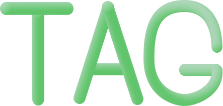
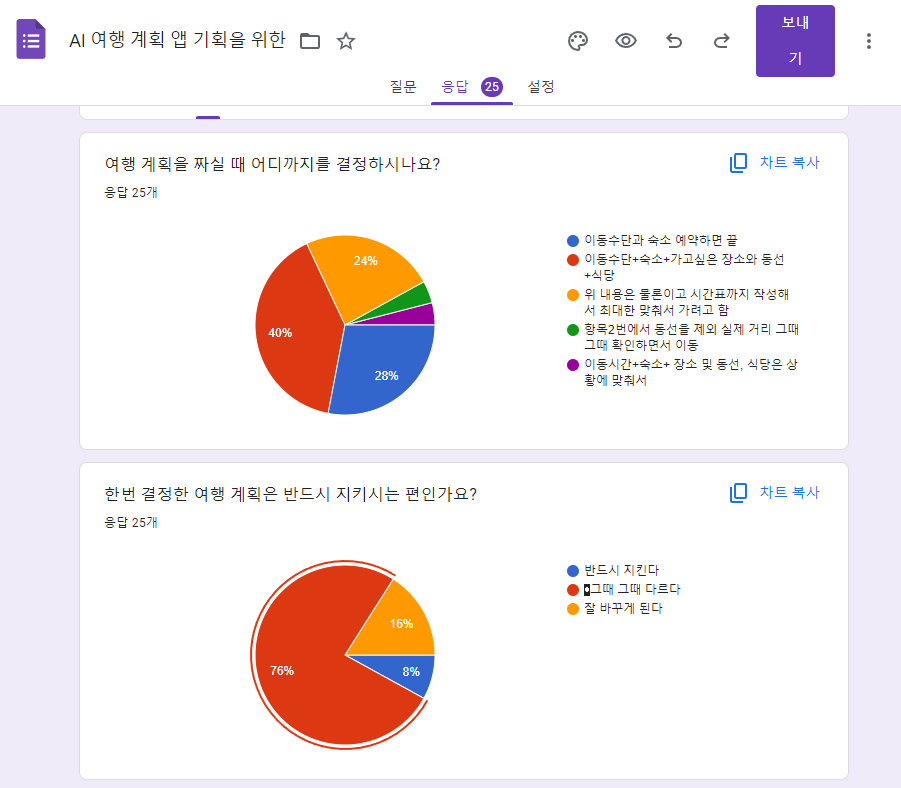
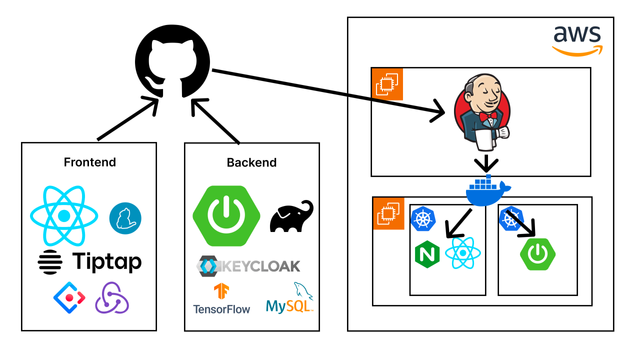

Tag A Trip
Travel Planning & Review-Sharing Platform — University Capstone Project

1. Overview
Tag A Trip is a web platform for planning a trip and sharing reviews afterwards, all in one place. Users build a travel plan (places, route, schedule), plan together with friends, and after the trip turn that plan into a review others can browse.
I led the team and was responsible for the project end to end.
- Ran overall planning: requirements gathering, scoping, and the schedule
- Led system design, applying the methods I had learned in Software Engineering coursework (user stories → screen design → sequence diagrams → API specification)
- Developed the frontend: shared layout, login, sign-up, friend requests, and the travel-plan creation UI
- Built the deployment pipeline on AWS with Jenkins — learning Gradle and Spring Boot builds from scratch to do it
2. Requirements — Starting from a User Survey
Before designing features, we ran a short survey (25 responses) to understand how people actually plan trips.

How far do you plan before a trip?
| Answer | Share |
|---|---|
| Transport + accommodation + places to visit, route, and restaurants | 40% |
| Transport and accommodation only | 28% |
| All of the above, plus a detailed timetable | 24% |
| Other (places only, or restaurants decided on the spot) | ~8% |
Once a plan is set, do you stick to it?
| Answer | Share |
|---|---|
| It depends | 76% |
| I often change it | 16% |
| I always stick to it | 8% |
Two things stood out. About two-thirds of respondents plan down to the level of places and routes, so a plan needed to hold more than bookings. And 92% don’t follow their plan strictly, so plans had to be easy to edit — during the trip as well as before it.
3. Design Process
We documented the project in Confluence and Figma and produced a full set of design artifacts before writing code:
- User stories to define the scope of the product
- Screen design (wireframes and page flow) — Figma: flow, mockups, and design
- Sequence diagrams to design how the frontend, API, and database interact for each feature
- RESTful API specification derived from the sequence diagrams
Working in this order meant the frontend and backend could be developed in parallel against an agreed API contract.
4. Architecture & Deployment

- Frontend: React with Zustand for state management and Sass, plus UI/design libraries
- Backend: Spring Boot built with Gradle
- Infrastructure: AWS EC2 for the application and CI server, S3 for file storage, RDS for the database
- CI/CD: Jenkins pulls from GitHub, builds, and deploys to EC2
I had no prior Spring Boot experience, so to own deployment I learned the Gradle build process and wired it into the Jenkins pipeline myself.
The initial architecture (above) included Redux, Keycloak, and Kubernetes. As the project took shape we judged them unnecessary for a project of this size and dropped them: Zustand covered our state-management needs with far less boilerplate, and a single-node Docker deployment was enough for our traffic.
5. Place Recommendation
The project included a Python module that recommends types of places (e.g. museums, beaches, cafés) based on the categories a user says they like. It uses user-based collaborative filtering over a public Google review-ratings dataset (average ratings per user across ~24 travel categories).
User's liked categories
→ encode as a new "user" row (liked = 5, otherwise 0)
→ append to the ratings matrix, mean-centre each category
→ cosine similarity between the new user and every existing user
→ similarity-weighted average of ratings per category
→ top-N categories → mapped to app place categoriesrating_normalized = data.subtract(data.mean(axis=0)).fillna(0)
cosine_sim = cosine_similarity(rating_normalized)
user_similarity = pd.DataFrame(cosine_sim, index=data.index,
columns=data.index)["User 0"]
weighted = rating_normalized.T.dot(user_similarity)
scores = weighted / np.abs(user_similarity).sum()
top = scores.sort_values(ascending=False).head(num_recommendations)Looking back
Revisiting this as a Data Science student, there are several things I would now do differently:
- Filter out what the user already chose. The top-N can include categories the user selected, so a recommendation can just repeat their input.
- Centre per user, not per category. Subtracting category means corrects for popular categories, but not for users who rate everything high or low.
- Handle the cold start explicitly. Encoding preferences as 5/0 forces a sparse, binary profile into a matrix of continuous ratings; a content-based or popularity fallback would be more honest for new users.
- Evaluate it. There was no offline metric. A hold-out evaluation (e.g. precision@k on masked ratings) would show whether it beats simply recommending the most popular categories.
6. What I Learned
- Leading a team meant working across planning, design, frontend, and deployment rather than a single layer
- A structured design process (user stories → screens → sequence diagrams → API spec) makes parallel development possible
- Starting from user research gave us concrete reasons for our feature priorities
- Removing unnecessary technology is as important as adding it
- First hands-on experience taking a service all the way from code to a CI/CD pipeline on AWS